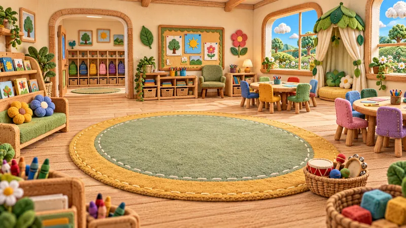
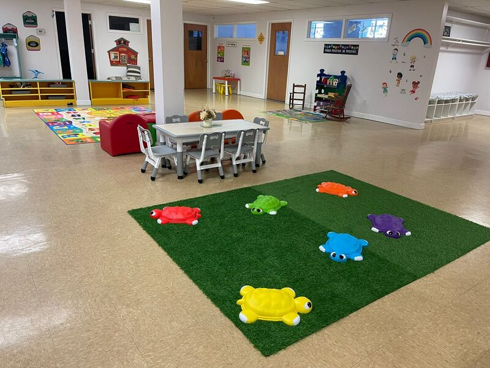
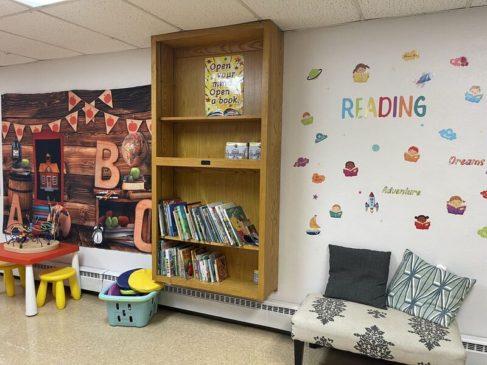
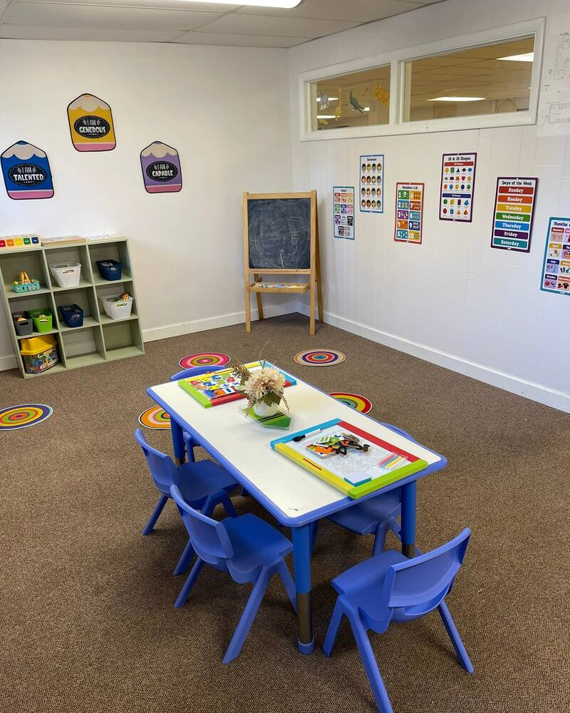
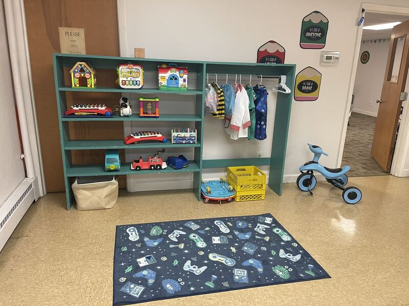
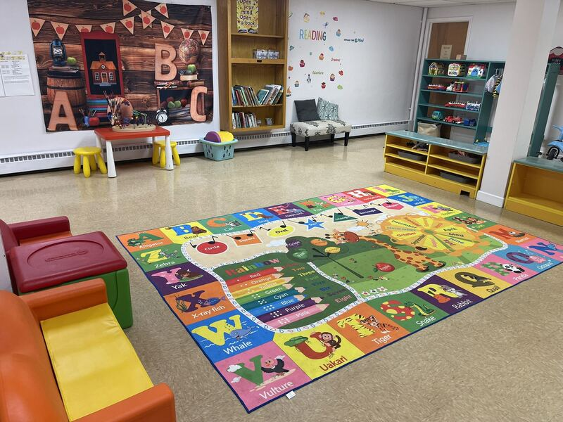
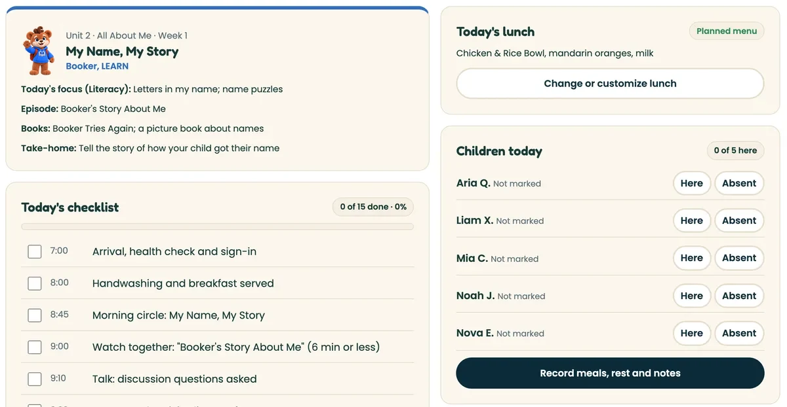
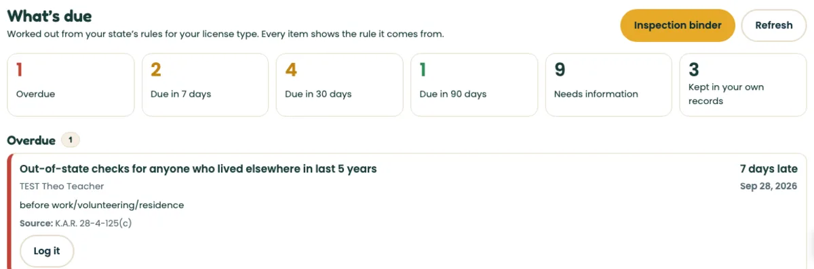
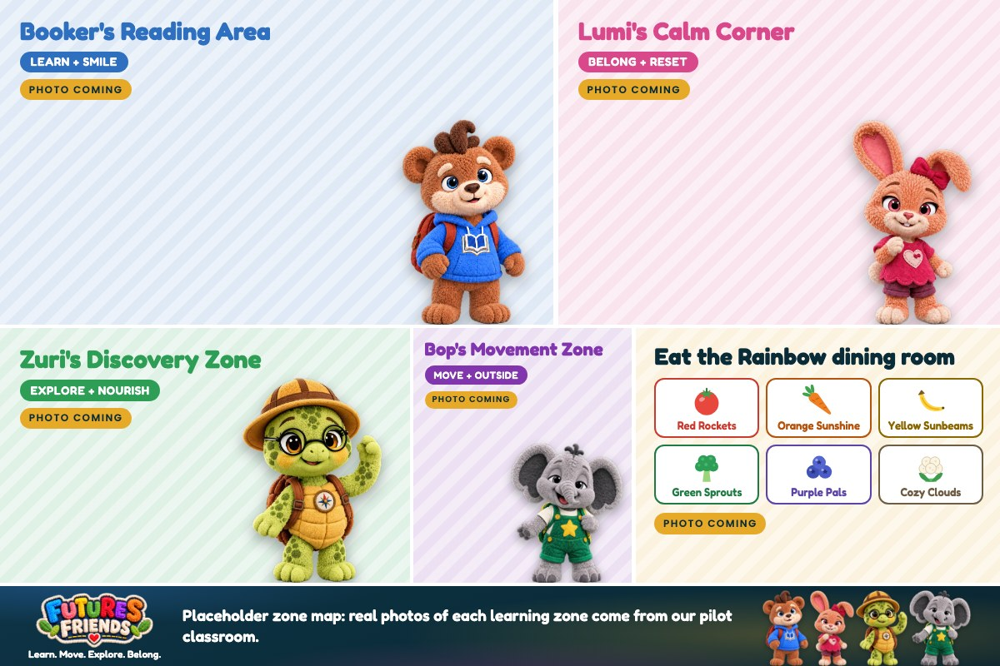

Reviewed our curriculum
I’m impressed by the way it combines empathy, structure, and real-world readiness in a way that educators can confidently implement.
The same four friends in the twos room and the pre-K room, so a child who moves up a room already knows who is waiting. Unit 1 is ready to teach as a draft; the rest of the year is planned.

 IllustrationThe storybook world, not a photo of our centerStory-world characters
IllustrationThe storybook world, not a photo of our centerStory-world charactersA curriculum educator and a registered nurse each reviewed part of what we offer: the curriculum and the Eat the Rainbow menu. These are their own words.
Reviewed our curriculum
I’m impressed by the way it combines empathy, structure, and real-world readiness in a way that educators can confidently implement.
Reviewed our Eat the Rainbow menu
I appreciate its focus on balanced meals and introducing children to a variety of foods.
Each statement and profile was supplied by the professional for Futures Learning Center. They are reviews of the curriculum and the menu, not an accreditation or a certification of every recipe.
Carpets, low see-through fences, signs and a cue three-year-olds usually pick up quickly, set up in the room you already have.
Ordering opens soon. Nothing is charged here. Prices are before tax and delivery; packages and the add-on are listed on the pricing page.










Ordering opens soon. Prices are published before tax and are proposed, owner to confirm. Launch package and prices
Available now
Ready today: free on this website, or for your program's educators in the Teacher Portal.
Included at launch Proposed, owner to confirm
A service a person delivers when ordering opens, in the proposed launch package.
Planned
Sold in the annual bundle, not ready yet. Nothing here is delivered or billed until it exists.
From the release list, version 2026-10-07.5: the same list on every page.
What exists today, for a center. Anything still in production says so.
The first month in summary: four weeks, a day in six steps and three age versions. Licensed centers receive the full plans; see a sample day on the summary.
Unit 1 at a glanceEvery item in the package, marked available now, in development or coming later. Prices are proposed, owner to confirm.
A call to match your rooms and ages, the welcome box, Level 1 training for every staff member, then Unit 1 with a family night.
How starting worksCall (816) 988-5661 about your rooms, ages, training or support. Training courses are in development and not yet state-approved.
Call (816) 988-5661 Support and answers

Four weeks led by Booker, Lumi, Zuri and Bop, 20 teaching days, three age versions of every activity and a family take-home each day. Draft, clearly labeled. See a sample day; licensed centers receive the full plans.
A licensable operating system, not a folder of PDFs. Six parts that work together so families see one consistent program.
This is a proposed partner package. Scope and terms are confirmed in a conversation. See the published program pricing, or learn how the day works on the whole-child page.
The childcare operation creates the audience. The characters and the shared program expand what a center can offer.
Your center starts it all.
Tuition, enrollment and retention. A program families can see on every tour and at every pickup gives your center something recognizable to talk about.
Children meet the friends on screen.
Books, episodes, music and digital. Children meet the friends in stories, then find them in your classroom.
Characters children already love.
Plush, kits, books and learning tools. Optional, child-facing products extend the rituals children already know.
One program across locations.
Center package, training and renewals. The same characters, language and routines in every location you run.
Enrollment→Character attachment→Product demand→Licensing
We do not promise enrollment or revenue results. That is why the plan starts with a pilot.
Our plan is to validate engagement, teacher workload and parent value before expanding the catalog.
Online licensing inquiries are not switched on yet, so this page sends nothing: no request goes out, there is no reference number and no automatic reply. Please call or email us and a real person will help you.
Fill in what you like. This stays on your device; it is not sent anywhere. Then copy it or print it, and email it to us or bring it to the center.
The same room: our pilot center as it is today, and the proposed Futures Friends transformation.
Twelve units, forty-eight theme weeks, with versions for twos, threes and pre-K. Units 1 to 11 are written day by day as drafts and none is approved yet (the full plans are for licensed centers); Unit 12 is being written. Up to 3 classrooms with Center Starter, 4 or more with Center Complete.
A star card from one of the friends for trying again, helping out, asking a question or finishing the puzzle a child nearly quit.
Look, smell, touch and describe new foods at the table. Tasting is always the child's choice, and nothing is charted or rewarded.
On Friday the class sits together and names who showed the week's value. The news goes home to families.
Every activity has a simpler version for twos and a stretch for pre-K.
Learning Steps help teachers notice what each child is doing and what comes next.
Picture cards and key words for English learners.
Classroom adaptations and early intervention guidance, alongside the curriculum. The Futures Hub does not store IEP or IFSP goals or health records.
Attendance, the day's checklist, what each child ate and notes home, in one screen. Built, goes live with the Hub
Planned menus checked against the CACFP lunch pattern. CACFP claim counts are planned. Planned
Staff needed by age mix under your state's rules, from today's attendance. Built, goes live with the Hub
Season One is planned as 13 episodes of about 6 minutes, watched together (Series Bible v3.0). Children 2 and younger do not watch episodes in care. No episode has been made yet.
Ordering opens soon. This is the exact scope of each package and where every item stands right now.
Available now
In development
Coming later
Available now
In development
Coming later
Want to start before these are made? See the launch package (proposed, owner to confirm): Unit 1 now, with a live session for your staff.
Available now: you can receive it today. In development: a draft or partial build exists. Coming later: not started yet. A finished character drawing is not a finished book or episode, and a Futures Friends completion record is not state-approved training credit.
The course method we are building for our own teachers, planned for your team: scenario mastery, time tracking and director checklists. In development, not open yet.
A 90-day Founding Partner pilot for 5 to 10 programs in the Kansas City area: home providers, centers and church weekday preschools.
Lesson plans for the month with age versions, staff office hours, a family newsletter, enrollment posts, a director check-in and a release calendar. Each item is marked available now, launching with the pilot, or planned.

IllustrationNot a photo of our centerIllustrated map, not a photo of our center. Tap a zone to step inside. See the Learning Zones Kit
How many classrooms, which ages, how many children. We put together a startup package that fits and mark where every item stands.
Questions about Futures Friends for your program or your family, or about our pilot center in Independence, Missouri? Call or write and we will get back to you.